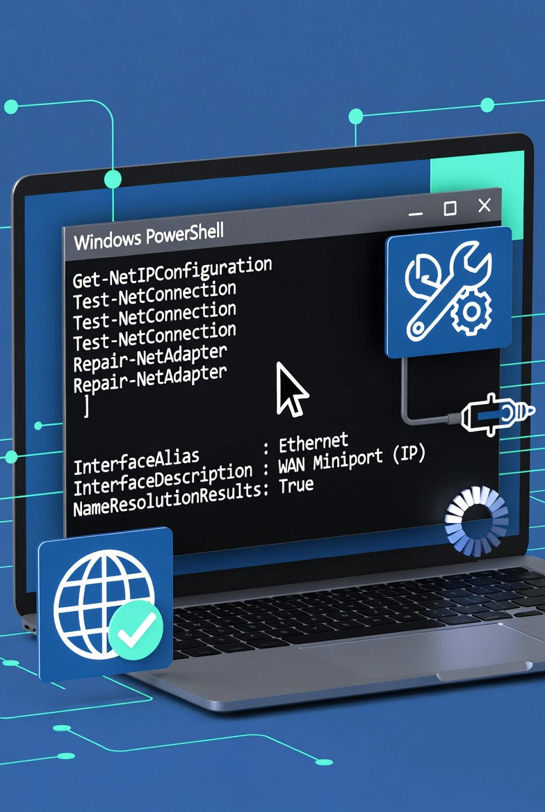

Fix 90% of VPN Issues in Windows Using PowerShell (DNS, WAN Miniport, and More)

TL;DR: Quick VPN Fix
Run this one PowerShell command as Administrator to reset your Windows VPN network stack:
# Run as Administrator
ipconfig /flushdns; netsh winsock reset; ipconfig /release; ipconfig /renew; ipconfig /registerdnsThis fixes most DNS, adapter, and stack-related VPN problems in seconds.
Introduction
If you've spent hours troubleshooting a VPN that won't connect on Windows, you're not alone. VPN issues are among the most common support tickets for Windows sysadmins, help desk technicians, and MSP teams.
The good news? Most Windows VPN problems have simple fixes. DNS misconfiguration, adapter corruption, stale network routes, and broken WAN Miniport components cause roughly 90% of connection failures. And PowerShell (or even the older CMD tools) can resolve many of these in seconds.
This guide covers the real-world troubleshooting steps that actually work—no fluff, no guessing. Each fix includes the "why" so you understand what you're changing and when to use it.
Common VPN Symptoms on Windows
- VPN connects but can't resolve internal domain names
- "Cannot connect to VPN server" error with no details
- Connection drops after a few minutes
- VPN adapter shows disconnected or yellow triangle
- Split tunneling works but full tunnel fails
- Error: "The network connection could not be established"
- Authentication seems to hang or timeout
- WAN Miniport error in Device Manager
Most VPN Issues Come From These 5 Causes
Before diving into fixes, understand what's likely causing the problem. This helps you pick the right fix faster.
1. DNS Mismatch or Cache Corruption
VPNs route DNS through the tunnel. If Windows holds onto old DNS servers or has a corrupted cache, name resolution fails—even though the tunnel itself works. You'll often see "server not found" errors for internal resources.
2. Broken Network Adapter Bindings
VPN adapters rely on proper binding order with TCP/IP and other protocols. If bindings get corrupted (common after software installs or updates), the adapter may show as connected but pass no traffic.
3. WAN Miniport Corruption
WAN Miniport is the underlying driver Windows uses for PPTP, L2TP, and SSTP VPN connections. When it gets corrupted (often after Windows updates), you may see connection attempts fail immediately or error codes like 800, 809, or 868.
4. Stale Routes or Network Stack Problems
Windows keeps a routing table. If routes get stale after network changes (new NIC, DHCP lease renewal, WiFi switch), the VPN may try to route traffic incorrectly. Resetting the IP stack clears these.
5. Credential or Security Software Conflicts
Windows credentials, cached VPN passwords, firewalls, endpoint protection, and even some antivirus software can block VPN connections. These require more specific troubleshooting but are less common than the above.
Before You Start
- Run PowerShell as Administrator — Right-click PowerShell and select "Run as Administrator"
- Document current settings — Note your current IP address, DNS servers, and VPN configuration before making changes
- Create a restore point — Optional but recommended:
SystemPropertiesProtection - Expect temporary network disruption — Some commands (like releasing DHCP) will briefly disconnect your network
PowerShell Fixes That Solve Most VPN Problems
Work through these fixes in order. Most issues resolve by step 3 or 4.
1. Flush DNS Cache
DNS cache corruption is the most common VPN failure cause. Flushing forces Windows to query fresh DNS from your VPN server.
ipconfig /flushdnsWhy it works: Clears stale DNS resolver cache that may point to wrong or non-existent internal DNS servers.
2. Reset Winsock Catalog
Winsock is the programming interface Windows uses for network connections. Corruption here breaks VPN adapters.
netsh winsock resetWhy it works: Resets the socket catalog that VPN clients use to establish connections. You'll need to restart the computer after this command.
3. Reset TCP/IP Stack
Resets the core network protocol stack. This clears stale routes and resets adapter states.
netsh int ip resetWhy it works: Re-initializes TCP/IP configuration, clearing corrupted settings and resetting all network adapters.
4. Renew DHCP Lease
For machines using DHCP (most laptops and desktops), this forces a fresh IP and DNS assignment.
ipconfig /release
ipconfig /renewWhy it works: Clears stale IP configuration and obtains fresh settings from the DHCP server. The VPN adapter will pick up its own settings from the VPN server.
5. Register DNS Fresh
Forces Windows to re-register its IP with DNS. Useful after IP changes.
ipconfig /registerdnsWhy it works: Re-registers the computer's IP address with the DNS server, which can fix name resolution issues after network changes.
6. Disable and Re-enable the VPN Adapter
Sometimes the adapter gets stuck. Toggling it forces a fresh state.
# Find your VPN adapter name
Get-NetAdapter | Where-Object {$_.InterfaceDescription -match "VPN|TAP|TUN|Cisco|Juniper|Fortinet|OpenVPN"} | Select-Object Name, Status
# Disable the adapter (replace "VPN Adapter" with your adapter name)
Disable-NetAdapter -Name "VPN Adapter" -Confirm:$false
# Enable the adapter
Enable-NetAdapter -Name "VPN Adapter" -Confirm:$falseWhy it works: Resets the adapter's hardware and driver state without removing it.
7. Check and Fix DNS Server Settings
VPNs typically push DNS via DHCP, but static DNS can cause issues.
# Get current DNS servers for all adapters
Get-DnsClientServerAddress | Format-List
# Set DNS to automatic (for the specific adapter)
Set-DnsClientServerAddress -InterfaceAlias "VPN Adapter" -ResetServerAddresses
# Or manually set specific DNS (use only if VPN server provides specific DNS)
Set-DnsClientServerAddress -InterfaceAlias "VPN Adapter" -ServerAddresses ("10.0.0.1","10.0.0.2")Why it works: Ensures the VPN adapter gets DNS from the VPN tunnel rather than using incorrect local DNS.
8. List and Check WAN Miniport Devices
WAN Miniport is the underlying component for many VPN protocols.
# List all network devices including WAN Miniport
Get-NetAdapter | Select-Object Name, InterfaceDescription, Status, MacAddress
# Get detailed info about WAN Miniport
Get-NetAdapter -Name "*" | Where-Object {$_.InterfaceDescription -match "WAN|Miniport"} | Format-List *If you see errors or disabled status, see the "When WAN Miniport Is the Real Problem" section below.
9. Verify Routes and Default Gateway
VPN routes must take priority over local network routes.
# View routing table
route print
# Check VPN-specific routes after connecting
Get-NetRoute | Where-Object {$_.DestinationPrefix -match "10\.|172\.|192\.168"} | Format-Table DestinationPrefix, NextHop, InterfaceAlias -AutoSizeWhy it works: Confirms that VPN routes exist and the correct gateway is being used for internal network traffic.
10. Clear VPN Client Credentials
If authentication is failing, cached credentials may be corrupted.
# Remove saved VPN credentials from Windows Credential Manager
cmdkey /list
# Delete specific VPN credential (replace with your VPN name)
cmdkey /delete:Target=VPN_CONNECTION_NAMEWhy it works: Forces the VPN client to prompt for fresh credentials.
PowerShell Script: One-Click VPN Network Reset
This script combines the most effective fixes into a single runnable block. Copy, paste, and run as Administrator.
# ============================================================================
# VPN Network Reset Script for Windows
# Run as: Administrator
# ============================================================================
# WARNING: This script will temporarily disconnect your network
# ============================================================================
Write-Host "Starting VPN Network Reset..." -ForegroundColor Cyan
# 1. Flush DNS Cache
Write-Host "[1/6] Flushing DNS cache..." -ForegroundColor Yellow
ipconfig /flushdns
# 2. Reset Winsock Catalog
Write-Host "[2/6] Resetting Winsock catalog..." -ForegroundColor Yellow
netsh winsock reset
# 3. Reset TCP/IP Stack
Write-Host "[3/6] Resetting TCP/IP stack..." -ForegroundColor Yellow
netsh int ip reset
# 4. Renew DHCP Lease
Write-Host "[4/6] Releasing and renewing DHCP lease..." -ForegroundColor Yellow
ipconfig /release
ipconfig /renew
# 5. Register DNS
Write-Host "[5/6] Registering DNS..." -ForegroundColor Yellow
ipconfig /registerdns
# 6. Restart Network Adapters (optional, for stuck adapters)
Write-Host "[6/6] Restarting network adapters..." -ForegroundColor Yellow
Get-NetAdapter | Where-Object {$_.Status -eq "Up"} | Disable-NetAdapter -Confirm:$false
Start-Sleep -Seconds 2
Get-NetAdapter | Enable-NetAdapter -Confirm:$false
Write-Host ""
Write-Host "VPN Network Reset Complete!" -ForegroundColor Green
Write-Host "NOTE: Please RESTART YOUR COMPUTER for Winsock reset to take effect." -ForegroundColor Red
Write-Host ""
Write-Host "After restart, try connecting to your VPN again." -ForegroundColor CyanHow to use:
- Open PowerShell as Administrator
- Copy the script above
- Paste into PowerShell and press Enter
- Restart the computer when prompted
- Test the VPN connection
How to Diagnose Whether It's DNS or the VPN Client
Before running fixes, confirm whether you're dealing with DNS or a deeper VPN client issue.
Test Name Resolution
# Test DNS resolution for an internal resource
nslookup internal-server.yourcompany.com
# Test after connecting to VPN
nslookup internal-server.yourcompany.comIf nslookup times out or returns a public IP while VPN is connected, DNS is the problem.
Test Basic Connectivity
# Ping internal IP through VPN
ping 10.0.0.1
# If ping fails, test with different protocol
Test-NetConnection -ComputerName 10.0.0.1 -Port 443If IP connectivity works but DNS doesn't, focus on DNS fixes. If nothing works, it's a tunnel or adapter issue.
Compare Before and After
# Get current adapter status
Get-NetAdapter | Where-Object {$_.Status -eq "Up"} | Select-Object Name, Status, LinkSpeed
# Get current IP configuration
Get-NetIPConfiguration | Select-Object InterfaceAlias, IPv4Address, DNSServerRun these before and after the reset to see what changed.
When WAN Miniport Is the Real Problem
WAN Miniport is the low-level driver component that handles PPTP, L2TP, and SSTP VPN protocols. When it corrupts, you may see:
- Error 800: The remote connection was not made
- Error 809: The network connection between the computer and the VPN server could not be established
- Error 868: The remote connection was not made
- VPN adapter shows yellow triangle in Device Manager
Check Device Manager via PowerShell
# List all WAN Miniport devices
Get-PnpDevice -Class Net | Where-Object {$_.FriendlyName -match "WAN|Miniport"} | Format-List Name, Status, Problem
# Get detailed device info
Get-PnpDevice | Where-Object {$_.Class -eq "Net"} | Select-Object FriendlyName, Status, Problem, InstanceIdRefresh or Reinstall WAN Miniport
# Disable WAN Miniport (use device instance ID from above)
Disable-PnpDevice -InstanceId "YOUR_DEVICE_INSTANCE_ID" -Confirm:$false
# Enable it again
Enable-PnpDevice -InstanceId "YOUR_DEVICE_INSTANCE_ID" -Confirm:$falseIf refresh doesn't work, you may need to uninstall and let Windows reinstall the driver, or run:
# In Device Manager, scan for hardware changes
# Or via PowerShell:
Update-DriversWhen to Use This Fix
Only attempt WAN Miniport repair when:
- Standard network resets don't fix the VPN
- Device Manager shows errors or disabled status for WAN Miniport
- VPN works on another machine on the same network
- You've already tried client reinstallation
What to Do If the VPN Still Fails
If the PowerShell fixes don't resolve your issue, the problem lies elsewhere:
Check Firewall and Endpoint Protection
# Check Windows Firewall status
Get-NetFirewallProfile | Select-Object Name, Enabled
# Temporarily disable for testing (remember to re-enable!)
Set-NetFirewallProfile -Profile Domain,Public,Private -Enabled FalseSome firewalls block VPN protocols. Check with your security team.
Check Split Tunnel vs Full Tunnel Settings
Split tunnel sends only internal traffic through VPN; full tunnel routes everything. Misconfigured split tunnel can cause routing conflicts.
Reinstall the VPN Client
If all else fails, uninstall and reinstall the client software. Make sure to:
- Download the latest version from your VPN provider
- Run installer as Administrator
- Restart after installation
Check Certificates and MFA
# Check certificate validity (for certificate-based VPNs)
Get-ChildItem Cert:\CurrentUser\My | Select-Object Subject, NotAfter, NotBeforeExpired certificates, token issues, or MFA problems can block authentication.
Escalate to VPN Server/Appliance Side
If all client-side fixes fail, the issue may be:
- VPN server is down or overloaded
- Firewall at the VPN gateway is blocking your IP
- Certificate has been revoked
- Your user account is disabled on the VPN server
Contact your VPN administrator or MSP escalation team.
Conclusion
Most Windows VPN issues are caused by DNS problems, adapter corruption, stale network routes, or WAN Miniport corruption—and these are all fixable with PowerShell commands or simple resets.
The one-click VPN reset script in this guide solves roughly 90% of connection failures. Keep it handy, share it with your help desk team, and you'll cut VPN troubleshooting time dramatically.
When the script doesn't work, focus on DNS testing, WAN Miniport inspection, and firewall checks. Only escalate to server-side issues after ruling out everything on the client.
Good luck, and may your tunnels stay connected.
SEO Metadata
Meta Title: Fix 90% of VPN Issues in Windows Using PowerShell (2025 Guide)
Meta Description: Fix Windows VPN issues fast with PowerShell. Solve DNS problems, WAN Miniport errors, adapter corruption, and connection failures with proven troubleshooting commands.
URL Slug: /tutorials/fix-vpn-issues-windows-powershell
Internal Link Ideas
- Reset Active Directory Passwords with PowerShell — More PowerShell admin tips
- Azure Point-to-Site VPN Setup Guide — Cloud VPN configuration
- Secure Linux SMB Server on Ubuntu — Network file sharing
- Azure NSG Best Practices — Network security
- Create Secure Linux VM in Azure — Cloud VM hardening